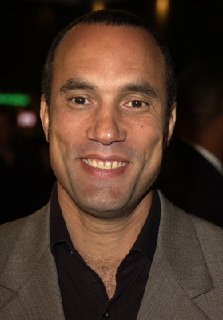

#9712 Eve's Bayou - Im Bann der Lügen

 IMDB-Wertung: 7.3 / 10
IMDB-Wertung: 7.3 / 10  Metascore: 0
Metascore: 0 
"In dem Sommer, als ich meinen Vater tötete, war ich 10 Jahre alt." So beginnt die Erzählung der kleinen Eve Batiste (Jurnee Smollett). Als sie ihren über alles geliebten Daddy (Samuel L. Jackson) beim Seitensprung ertappt, ist für sie die Kindheit schlagartig vorbei. Ihr Vater, der Arzt Louis Batiste, liebt seine beiden Töchter und seine Frau Roz über alles. Doch bei schönen Frauen wird er schwach. Als auch noch ihr Onkel, der dritte Mann ihrer Tante, unter mysteriösen Umständen stirbt, sucht sie im Voodoo-Kult zuflucht und gerät in einen Strudel von Mißverständnissen und Gewalt...
Jahr: 1997
Dauer: 108 Minuten
FSK:
Land: USA Studio: Trimark PicturesTonspuren:
Untertitel:
Auflösung: 1080p (1920x1016) Größe: 5109 MB
Genre: Drama
Regisseur: Kasi Lemmons
Drehbuch: Kasi Lemmons
Soundtrack: Terence Blanchard
Darsteller:
- Jurnee Smollett-Bell als Eve Batiste
 Meagan Good als Cisely Batiste
Meagan Good als Cisely Batiste Lynn Whitfield als Roz Batiste
Lynn Whitfield als Roz Batiste Samuel L. Jackson als Louis Batiste
Samuel L. Jackson als Louis Batiste Debbi Morgan als Mozelle Batiste Delacroix
Debbi Morgan als Mozelle Batiste Delacroix- Diahann Carroll als Elzora
 Vondie Curtis-Hall als Julian Grayraven
Vondie Curtis-Hall als Julian Grayraven-  Roger Guenveur Smith als Lenny Mereaux
- Lisa Nicole Carson als Matty Mereaux
- Branford Marsalis als Harry
 Marcus Lyle Brown als Hosea
Marcus Lyle Brown als Hosea Carol Sutton als Madame Renard
Carol Sutton als Madame Renard- Victoria Rowell als Stevie Hobbs
- Leonard L. Thomas als Maynard
- Allen Toussaint als Proprietor
- Tamara Tunie als Narrator
- Jake Smollett als Poe Batiste
- Ethel Ayler als Gran Mere
- Afonda Colbert als Henrietta
- Lola Dalferes als Lynette
- Alverta Perkins Dunigan als Paige
 Ron Flagge als Vendor
Ron Flagge als Vendor- Sharon K. London als Hilary
- Oneal A. Isaac als Bus Driver
- Julian Dalcour als Bartender
- Billie Neal als Ghost of Original Eve
- Beaux Sedwick als Wife (uncredited)
- Greta Valenti als Girl on Street (uncredited)
Datei: X:\1997\Eve's Bayou - Im Bann der Lügen (1997, FSK, 1920x1016).mkv seit 10.10.2018
Festplatte: HD 1996-2002
 Es gibt insgesamt 83 Filme in der Gruppe '1997'
Es gibt insgesamt 83 Filme in der Gruppe '1997'